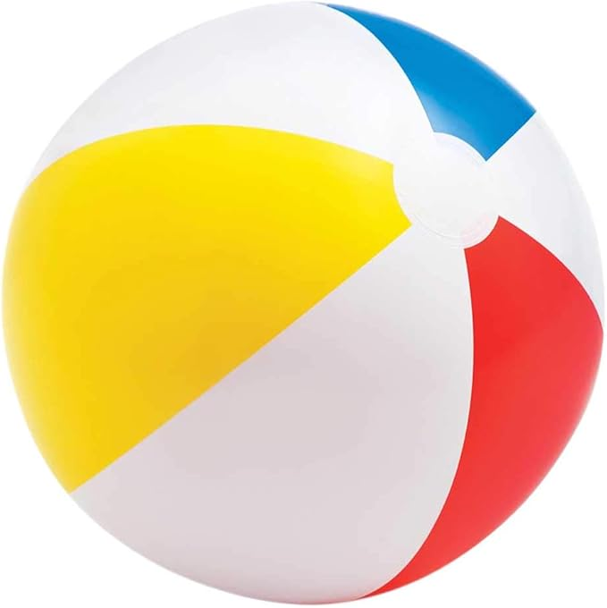

<div class="interactive-widget" id="tween-keyframe-widget">
    <style>
        /* ── WATCHOUT Producer-matched tween widget ── */
        #tween-keyframe-widget {
            /* WATCHOUT Dark Theme Surface Colors (from main.js computed values) */
            --wo-surface-0: #121212;
            --wo-surface-05: #181818;
            --wo-surface-1: #1e1e1e;
            --wo-surface-2: #232323;
            --wo-surface-3: #252525;
            --wo-surface-4: #272727;
            --wo-surface-6: #2c2c2c;
            --wo-surface-8: #2e2e2e;
            --wo-surface-12: #333333;
            --wo-surface-16: #363636;
            --wo-surface-24: #383838;
            /* WATCHOUT Brand Colors */
            --wo-primary: #B0388F;
            --wo-primary-dark: #A61680;
            --wo-primary-light: #C55DA8;
            --wo-accent: #6E66B9;
            --wo-accent-dark: #491ad6;
            /* WATCHOUT On-Surface emphasis */
            --wo-on-surface: #ffffff;
            --wo-high-emphasis: #dedede;
            --wo-medium-emphasis: #999999;
            --wo-disabled: #606060;
            --wo-separator: #383838;
            /* Semantic */
            --wo-positive: #21BA45;
            --wo-negative: #C10015;
            --wo-warning: #F2C037;
            /* Tween color: Opacity default */
            --wo-tween-color: #FF4081;
            /* PropertySection */
            --wo-section-bg: #171717;
            --wo-section-hover: #181818;
            --wo-section-header-h: 25px;

            font-family: 'Roboto', 'Inter', system-ui, sans-serif;
            width: 100%;
            max-width: 920px;
            box-sizing: border-box;
            color: var(--wo-high-emphasis);
            font-size: 13px;
        }
        #tween-keyframe-widget *, #tween-keyframe-widget *::before, #tween-keyframe-widget *::after {
            box-sizing: border-box;
        }

        /* ── Layout Grid ── */
        .tw-layout {
            display: grid;
            grid-template-columns: 1fr 240px;
            grid-template-rows: auto auto;
            gap: 12px;
        }
        .tw-stage-wrap { grid-column: 1; grid-row: 1; }
        .tw-props-wrap { grid-column: 2; grid-row: 1 / 3; }
        .tw-timeline-wrap { grid-column: 1; grid-row: 2; }

        @media (max-width: 680px) {
            .tw-layout {
                grid-template-columns: 1fr;
                grid-template-rows: auto auto auto;
            }
            .tw-stage-wrap { grid-column: 1; grid-row: 1; }
            .tw-timeline-wrap { grid-column: 1; grid-row: 2; }
            .tw-props-wrap { grid-column: 1; grid-row: 3; }
        }

        /* ── Panel (PropertySection emulation) ── */
        .tw-panel {
            background: var(--wo-section-bg);
            border-radius: 4px;
            overflow: hidden;
            transition: background-color 0.3s cubic-bezier(0.25, 0.8, 0.5, 1);
        }
        .tw-panel:hover,
        .tw-panel:focus-within {
            background: var(--wo-section-hover);
        }
        .tw-panel-hdr {
            display: flex;
            align-items: center;
            justify-content: flex-end;
            padding: 0 10px;
            height: var(--wo-section-header-h);
            background: var(--wo-surface-1);
            font-weight: 600;
            text-transform: uppercase;
            letter-spacing: 3px;
            font-size: 0.65rem;
            color: var(--wo-medium-emphasis);
            border-right: 4px solid var(--wo-primary);
            box-shadow: 0px 0px 8px 0px rgba(0, 0, 0, 0.4);
            user-select: none;
            position: relative;
            z-index: 1;
        }
        .tw-panel-hdr-inactive {
            border-right-color: var(--wo-surface-24);
        }
        .tw-panel:focus-within .tw-panel-hdr {
            background: hsl(317, 39%, 22%);
        }
        .tw-panel-body {
            padding: 12px;
            display: grid;
            gap: 12px;
        }

        /* ── Stage Preview ── */
        .tw-stage {
            position: relative;
            height: 180px;
            background: var(--wo-surface-0);
            overflow: hidden;
            cursor: default;
            border-top: 1px solid var(--wo-separator);
        }
        .tw-stage-grid {
            position: absolute; inset: 0;
            background-image:
                linear-gradient(rgba(255,255,255,0.04) 1px, transparent 1px),
                linear-gradient(90deg, rgba(255,255,255,0.04) 1px, transparent 1px);
            background-size: 40px 40px;
            pointer-events: none;
        }
        .tw-stage-obj {
            position: absolute;
            width: 80px; height: 80px;
            left: 50%; top: 50%;
            transform: translate(-50%, -50%);
            border-radius: 4px;
            pointer-events: none;
            /* Selection frame when visible */
            box-shadow: 0 0 0 1px rgba(110, 102, 185, 0.6);
        }
        .tw-stage-obj img {
            width: 100%; height: 100%;
            object-fit: cover;
            border-radius: 4px;
            display: block;
        }
        .tw-stage-label {
            position: absolute; bottom: 6px; left: 8px;
            font-size: 0.68rem; color: var(--wo-medium-emphasis);
            pointer-events: none; user-select: none;
        }
        .tw-stage-val {
            position: absolute; top: 6px; right: 8px;
            font-size: 0.72rem; font-weight: 600; color: var(--wo-high-emphasis);
            font-family: 'Roboto Mono', monospace;
            pointer-events: none; user-select: none;
        }

        /* ── SVG Tween Curve Area ── */
        .tw-curve-area {
            position: relative;
            height: 200px;
            background: var(--wo-surface-0);
            cursor: crosshair;
            overflow: hidden;
        }
        .tw-curve-area svg {
            display: block;
            width: 100%;
            height: 100%;
        }
        /* Curve background rect */
        .tw-curve-bg {
            fill: var(--wo-surface-05);
        }
        /* Curve path */
        .tw-curve-path {
            fill: none;
            stroke: var(--wo-tween-color);
            stroke-width: 2;
            opacity: 1;
        }
        /* Grid lines */
        .tw-grid-line {
            stroke: rgba(255,255,255,0.06);
            stroke-width: 1;
        }
        .tw-grid-label {
            fill: var(--wo-medium-emphasis);
            font-family: 'Roboto Mono', monospace;
            font-size: 9px;
            user-select: none;
        }
        /* Diamond point handle */
        .tw-point-handle {
            cursor: pointer;
        }
        .tw-point-diamond {
            stroke: var(--wo-tween-color);
            stroke-width: 1.5;
            fill: var(--wo-surface-05);
            stroke-opacity: 0.75;
        }
        .tw-point-diamond.tw-selected {
            fill: #ffffff;
            stroke-opacity: 1;
        }
        /* Playhead cursor */
        .tw-playhead-line {
            stroke: var(--wo-accent);
            stroke-width: 2;
            stroke-dasharray: 4 3;
            pointer-events: none;
        }
        .tw-playhead-tri {
            fill: var(--wo-accent);
            pointer-events: none;
        }

        /* ── WATCHOUT Timeline Layout ── */
        .tw-timeline {
            display: flex;
            flex-direction: column;
            background: var(--wo-surface-0);
            overflow: hidden;
        }

        /* -- Ruler + Cue Track Row -- */
        .tw-tl-tracks {
            display: grid;
            grid-template-columns: 120px 1fr;
            border-bottom: 1px solid var(--wo-separator);
        }

        /* Layer header column (left of ruler + cue) */
        .tw-tl-layer-hdr {
            background: var(--wo-surface-05);
            border-right: 4px solid var(--wo-primary);
            display: flex;
            flex-direction: column;
        }
        .tw-tl-layer-ruler-spacer {
            height: 24px;
            background: var(--wo-surface-1);
            border-bottom: 1px solid var(--wo-separator);
        }
        .tw-tl-layer-label {
            display: flex;
            align-items: center;
            gap: 6px;
            padding: 0 8px;
            height: 32px;
            font-size: 0.72rem;
            color: var(--wo-high-emphasis);
            border-bottom: 1px solid var(--wo-separator);
            cursor: default;
            user-select: none;
            overflow: hidden;
            white-space: nowrap;
            text-overflow: ellipsis;
        }
        .tw-tl-layer-label svg {
            flex-shrink: 0;
            opacity: 0.6;
        }

        /* Ruler + cue body (right side) */
        .tw-tl-body {
            display: flex;
            flex-direction: column;
            min-width: 0;
            position: relative;
        }

        /* Time ruler bar */
        .tw-tl-ruler {
            position: relative;
            height: 24px;
            background: var(--wo-surface-1);
            border-bottom: 1px solid var(--wo-separator);
            cursor: pointer;
            user-select: none;
            overflow: hidden;
        }
        .tw-tl-ruler svg {
            display: block;
            width: 100%;
            height: 100%;
        }
        .tw-ruler-tick {
            stroke: var(--wo-medium-emphasis);
            stroke-width: 1;
        }
        .tw-ruler-tick-minor {
            stroke: var(--wo-disabled);
            stroke-width: 1;
        }
        .tw-ruler-label {
            fill: var(--wo-medium-emphasis);
            font-family: 'Roboto Mono', monospace;
            font-size: 9px;
            user-select: none;
        }
        .tw-ruler-cursor {
            fill: var(--wo-accent);
        }

        /* Cue track area */
        .tw-tl-cue-track {
            position: relative;
            height: 32px;
            background: var(--wo-surface-0);
            border-bottom: 1px solid var(--wo-separator);
            overflow: hidden;
        }
        /* Cue bar (rounded rect on track) */
        .tw-tl-cue-bar {
            position: absolute;
            top: 3px;
            height: 26px;
            border-radius: 4px;
            background: color-mix(in oklab, #42A5F5, var(--wo-surface-2) 70%);
            border-top: 3px solid color-mix(in oklab, #42A5F5, var(--wo-high-emphasis) 25%);
            border-right: 1px ridge rgba(255,255,255,0.3);
            cursor: default;
            display: flex;
            align-items: center;
            padding: 0 8px;
            font-size: 0.65rem;
            color: var(--wo-high-emphasis);
            user-select: none;
            overflow: hidden;
            white-space: nowrap;
            text-overflow: ellipsis;
        }
        .tw-tl-cue-bar.tw-selected-cue {
            background: color-mix(in oklab, #42A5F5, var(--wo-surface-2) 50%);
            box-shadow: inset 0 0 0 1px color-mix(in oklab, #42A5F5, white 80%);
        }
        /* Track end marker */
        .tw-tl-track-end {
            position: absolute;
            top: 0; bottom: 0; right: 0;
            width: 2px;
            background: var(--wo-separator);
        }
        /* Playhead overlay on tracks */
        .tw-tl-playhead {
            position: absolute;
            top: 0;
            width: 2px;
            background: var(--wo-accent);
            opacity: 0.8;
            pointer-events: none;
            z-index: 5;
        }

        /* -- Splitter between cue tracks and tween curves -- */
        .tw-tl-splitter {
            height: 4px;
            background: var(--wo-surface-3);
            cursor: row-resize;
            border-top: 1px solid var(--wo-separator);
            border-bottom: 1px solid var(--wo-separator);
        }

        /* -- Tween Header + Curve Row -- */
        .tw-tl-tweens {
            display: grid;
            grid-template-columns: 120px 1fr;
        }

        /* Tween header column (left) */
        .tw-tl-tween-hdr {
            background: var(--wo-surface-05);
            border-right: 4px solid var(--wo-primary);
        }
        .tw-tl-tween-legend {
            display: flex;
            align-items: center;
            gap: 6px;
            padding: 0 8px;
            height: 28px;
            font-size: 0.72rem;
            color: var(--wo-high-emphasis);
            background: var(--wo-surface-05);
            cursor: default;
            user-select: none;
        }
        .tw-tl-tween-legend.tw-tween-selected {
            background: #444;
        }
        .tw-tl-tween-color-bar {
            width: 4px;
            height: 14px;
            border-radius: 1px;
            background: var(--wo-tween-color);
            flex-shrink: 0;
        }
        .tw-tl-tween-name {
            flex: 1;
            min-width: 0;
            overflow: hidden;
            text-overflow: ellipsis;
            white-space: nowrap;
        }
        .tw-tl-tween-val {
            font-family: 'Roboto Mono', monospace;
            font-size: 0.65rem;
            color: var(--wo-medium-emphasis);
            flex-shrink: 0;
        }
        /* Eye toggle button */
        .tw-tl-eye-btn {
            background: none;
            border: none;
            padding: 2px;
            cursor: pointer;
            color: var(--wo-medium-emphasis);
            display: flex;
            align-items: center;
            flex-shrink: 0;
            transition: color 0.15s;
        }
        .tw-tl-eye-btn:hover {
            color: var(--wo-high-emphasis);
        }

        @media (max-width: 680px) {
            .tw-tl-tracks,
            .tw-tl-tweens {
                grid-template-columns: 90px 1fr;
            }
        }

        /* ── Transport Bar ── */
        .tw-transport {
            display: flex; align-items: center; gap: 6px;
            padding: 6px 10px;
            background: var(--wo-surface-1);
            border-top: 1px solid var(--wo-separator);
        }
        .tw-transport button {
            background: var(--wo-surface-4); border: none;
            color: var(--wo-medium-emphasis); border-radius: 4px;
            width: 28px; height: 28px;
            cursor: pointer; display: flex; align-items: center; justify-content: center;
            transition: all 0.15s;
            padding: 0;
        }
        .tw-transport button:hover {
            background: var(--wo-surface-8);
            color: var(--wo-high-emphasis);
        }
        .tw-transport button.tw-active {
            background: var(--wo-primary);
            color: #fff;
        }
        .tw-transport-time {
            font-family: 'Roboto Mono', monospace; font-size: 0.78rem;
            color: var(--wo-high-emphasis); margin-left: auto;
            user-select: none;
        }
        .tw-transport-hint {
            font-size: 0.65rem; color: var(--wo-disabled);
            margin-left: 8px; user-select: none;
        }

        /* ── Preset Selector ── */
        .tw-presets {
            display: flex; gap: 4px; padding: 6px 10px;
            background: var(--wo-surface-1);
            border-bottom: 1px solid var(--wo-separator);
            flex-wrap: wrap;
        }
        .tw-preset-btn {
            background: var(--wo-surface-4); border: none;
            color: var(--wo-medium-emphasis); border-radius: 3px;
            padding: 3px 10px; font-size: 0.68rem; font-weight: 500;
            cursor: pointer; transition: all 0.15s;
            white-space: nowrap;
        }
        .tw-preset-btn:hover {
            background: var(--wo-surface-8);
            color: var(--wo-high-emphasis);
        }
        .tw-preset-btn.tw-active {
            background: var(--wo-primary);
            color: #fff;
        }

        /* ── Properties Panel (Cue Properties) ── */
        .tw-props {
            display: flex; flex-direction: column; gap: 12px;
            font-size: 0.82rem;
        }
        .tw-prop-row {
            display: flex; flex-direction: column; gap: 4px;
        }
        .tw-prop-label {
            font-size: 0.65rem; font-weight: 600; color: var(--wo-medium-emphasis);
            text-transform: uppercase; letter-spacing: 1px;
        }
        /* NumberProperty-style input: filled, square, 6px padding */
        .tw-prop-input {
            background: var(--wo-surface-1);
            border: none;
            border-radius: 0;
            padding: 6px;
            color: var(--wo-high-emphasis);
            font-family: 'Roboto Mono', monospace;
            font-size: 0.82rem;
            outline: none;
            width: 100%;
            transition: background-color 0.15s;
        }
        .tw-prop-input:focus {
            background: var(--wo-surface-4);
        }
        .tw-prop-input::placeholder {
            color: var(--wo-disabled);
        }

        /* ── Transition Picker Dropdown ── */
        .tw-transition-btn {
            display: flex; align-items: center; gap: 6px;
            background: var(--wo-surface-1);
            border: none; border-radius: 0;
            padding: 6px 8px;
            color: var(--wo-high-emphasis);
            font-family: inherit;
            font-size: 0.82rem;
            width: 100%;
            cursor: pointer;
            text-align: left;
            min-width: 0;
            transition: background-color 0.15s;
            position: relative;
        }
        .tw-transition-btn:hover {
            background: var(--wo-surface-4);
        }
        .tw-transition-btn svg {
            flex-shrink: 0;
        }
        .tw-transition-btn .tw-dd-arrow {
            margin-left: auto;
            color: var(--wo-medium-emphasis);
            flex-shrink: 0;
        }
        /* Dropdown panel */
        .tw-transition-dropdown {
            display: none;
            position: absolute;
            z-index: 100;
            background: var(--wo-surface-6);
            border: 1px solid var(--wo-separator);
            border-radius: 4px;
            box-shadow: 0 8px 24px rgba(0,0,0,0.5);
            padding: 12px 8px;
            min-width: 280px;
            max-height: 380px;
            overflow-y: auto;
        }
        .tw-transition-dropdown.tw-open {
            display: block;
        }
        .tw-transition-dropdown table {
            border-collapse: collapse;
            width: 100%;
        }
        .tw-transition-dropdown td {
            padding: 2px 4px;
            vertical-align: middle;
            white-space: nowrap;
        }
        .tw-transition-dropdown td:last-child {
            color: var(--wo-medium-emphasis);
            font-size: 0.75rem;
            padding-left: 8px;
        }
        /* Toggle button group for In/Out/InOut */
        .tw-tt-group {
            display: inline-flex;
            background: var(--wo-surface-1);
            border-radius: 3px;
            overflow: hidden;
        }
        .tw-tt-btn {
            background: var(--wo-surface-1);
            border: none;
            cursor: pointer;
            padding: 2px;
            display: flex; align-items: center; justify-content: center;
            transition: background-color 0.15s;
        }
        .tw-tt-btn:hover {
            background: var(--wo-surface-8);
        }
        .tw-tt-btn.tw-tt-active {
            background: var(--wo-primary);
        }
        .tw-tt-btn svg {
            display: block;
        }
        .tw-tt-btn svg path {
            stroke: var(--wo-medium-emphasis);
            stroke-width: 2;
            fill: none;
        }
        .tw-tt-btn.tw-tt-active svg path {
            stroke: #fff;
        }
        .tw-tt-btn:hover svg path {
            stroke: var(--wo-high-emphasis);
        }

        /* ── Action Buttons ── */
        .tw-prop-actions {
            display: flex; gap: 6px; margin-top: 4px;
        }
        .tw-prop-actions button {
            flex: 1;
            background: var(--wo-surface-2);
            border: 1px solid var(--wo-separator);
            border-radius: 3px;
            padding: 5px 0;
            color: var(--wo-medium-emphasis);
            font-size: 0.72rem;
            font-weight: 500;
            cursor: pointer;
            transition: all 0.15s;
        }
        .tw-prop-actions button:hover {
            background: var(--wo-surface-4);
            color: var(--wo-high-emphasis);
        }
        .tw-prop-actions button.tw-danger:hover {
            border-color: var(--wo-negative);
            color: var(--wo-negative);
        }

        .tw-no-sel {
            color: var(--wo-disabled);
            font-size: 0.78rem;
            font-style: italic;
            padding: 20px 0;
            text-align: center;
        }
    </style>

    <!-- Layout -->
    <div class="tw-layout">
        <!-- Stage -->
        <div class="tw-stage-wrap">
            <div class="tw-panel">
                <div class="tw-panel-hdr">Stage Preview</div>
                <div class="tw-stage" id="tw-stage">
                    <div class="tw-stage-grid"></div>
                    <div class="tw-stage-obj" id="tw-stage-obj">
                        
                    </div>
                    <div class="tw-stage-label">Opacity</div>
                    <div class="tw-stage-val" id="tw-stage-val">100%</div>
                </div>
            </div>
        </div>

        <!-- Properties -->
        <div class="tw-props-wrap">
            <div class="tw-panel" style="height: 100%;">
                <div class="tw-panel-hdr">Cue Properties</div>
                <div class="tw-panel-body">
                    <div class="tw-props" id="tw-props">
                        <div class="tw-no-sel" id="tw-no-sel">Click a point to inspect</div>
                        <div id="tw-prop-fields" style="display:none;">
                            <div class="tw-prop-row">
                                <span class="tw-prop-label">Time from Start of Cue</span>
                                <input class="tw-prop-input" id="tw-prop-time" type="text" inputmode="decimal" placeholder="0.00">
                            </div>
                            <div class="tw-prop-row" style="margin-top:8px;">
                                <span class="tw-prop-label">Value (%)</span>
                                <input class="tw-prop-input" id="tw-prop-value" type="text" inputmode="decimal" placeholder="0">
                            </div>
                            <div class="tw-prop-row" style="margin-top:8px;">
                                <span class="tw-prop-label">Transition Type</span>
                                <div style="position:relative;" id="tw-transition-wrap">
                                    <button class="tw-transition-btn" id="tw-transition-btn" type="button">
                                        <svg id="tw-transition-preview" width="48" height="24" viewBox="0 0 48 24"></svg>
                                        <span id="tw-transition-label">Linear</span>
                                        <svg class="tw-dd-arrow" width="10" height="6" viewBox="0 0 10 6"><path d="M1 1 L5 5 L9 1" stroke="currentColor" stroke-width="1.5" fill="none"/></svg>
                                    </button>
                                    <div class="tw-transition-dropdown" id="tw-transition-dropdown">
                                        <table id="tw-transition-table"></table>
                                    </div>
                                </div>
                            </div>
                            <div class="tw-prop-actions" style="margin-top:12px;">
                                <button id="tw-btn-add" title="Add a new point at the playhead">Add Point</button>
                                <button id="tw-btn-del" class="tw-danger" title="Remove selected point">Delete</button>
                            </div>
                        </div>
                    </div>
                </div>
            </div>
        </div>

        <!-- Timeline -->
        <div class="tw-timeline-wrap">
            <div class="tw-panel">
                <div class="tw-panel-hdr">Timeline</div>
                <div class="tw-presets" id="tw-presets"></div>
                <div class="tw-timeline">
                    <!-- Ruler + Cue Track Row -->
                    <div class="tw-tl-tracks">
                        <!-- Layer header (left column) -->
                        <div class="tw-tl-layer-hdr">
                            <div class="tw-tl-layer-ruler-spacer"></div>
                            <div class="tw-tl-layer-label">
                                <!-- Image icon -->
                                <svg width="14" height="14" viewBox="0 0 14 14" fill="none" stroke="currentColor" stroke-width="1.2">
                                    <rect x="1" y="1" width="12" height="12" rx="1.5"/>
                                    <circle cx="4.5" cy="4.5" r="1.5"/>
                                    <path d="M1 10 l3.5-4 2.5 2.5 2-1.5 4 3"/>
                                </svg>
                                <span>beach_ball.jpg</span>
                            </div>
                        </div>
                        <!-- Ruler + cue body (right column) -->
                        <div class="tw-tl-body">
                            <div class="tw-tl-ruler" id="tw-ruler">
                                <svg id="tw-ruler-svg" xmlns="http://www.w3.org/2000/svg"></svg>
                            </div>
                            <div class="tw-tl-cue-track" id="tw-cue-track">
                                <div class="tw-tl-cue-bar tw-selected-cue" id="tw-cue-bar">beach_ball.jpg</div>
                                <div class="tw-tl-playhead" id="tw-track-playhead" style="height:100%;"></div>
                            </div>
                        </div>
                    </div>

                    <!-- Splitter -->
                    <div class="tw-tl-splitter"></div>

                    <!-- Tween Header + Curve Row -->
                    <div class="tw-tl-tweens">
                        <!-- Tween header (left column) -->
                        <div class="tw-tl-tween-hdr">
                            <div class="tw-tl-tween-legend tw-tween-selected" id="tw-tween-legend">
                                <div class="tw-tl-tween-color-bar"></div>
                                <button class="tw-tl-eye-btn" id="tw-tween-eye" title="Toggle visibility">
                                    <svg width="14" height="10" viewBox="0 0 14 10" fill="none" stroke="currentColor" stroke-width="1.2">
                                        <path d="M1 5 C3 1 11 1 13 5 C11 9 3 9 1 5 Z"/>
                                        <circle cx="7" cy="5" r="2"/>
                                    </svg>
                                </button>
                                <span class="tw-tl-tween-name">Opacity</span>
                                <span class="tw-tl-tween-val" id="tw-tween-readout">100%</span>
                            </div>
                        </div>
                        <!-- Tween curve area (right column) -->
                        <div class="tw-curve-area" id="tw-curve-area">
                            <svg id="tw-curve-svg" xmlns="http://www.w3.org/2000/svg"></svg>
                        </div>
                    </div>
                </div>
                <div class="tw-transport">
                    <button id="tw-btn-play" title="Play / Pause">
                        <svg width="14" height="14" viewBox="0 0 14 14" fill="currentColor">
                            <path id="tw-play-icon" d="M3,1 L12,7 L3,13 Z"/>
                        </svg>
                    </button>
                    <button id="tw-btn-reset" title="Reset to start">
                        <svg width="14" height="14" viewBox="0 0 14 14" fill="none" stroke="currentColor" stroke-width="1.5"><rect x="3" y="2" width="8" height="10" rx="1"/></svg>
                    </button>
                    <span class="tw-transport-time" id="tw-time-display">0.00s / 3.00s</span>
                    <span class="tw-transport-hint">Double-click curve to add point</span>
                </div>
            </div>
        </div>
    </div>
</div>

<script>
(function () {
    'use strict';

    /* ════════════════════════════════════════════
       CONSTANTS (matching TweenCurves.vue)
       ════════════════════════════════════════════ */
    var HANDLE_RADIUS = 7;
    var HANDLE_INNER_RADIUS = 5.5;
    var EDITOR_MARGIN = 2;
    var Y_MARGIN = HANDLE_RADIUS;
    var TWEEN_COLOR = '#FF4081'; // Opacity tween color

    var sin = Math.sin, cos = Math.cos, PI = Math.PI, pow = Math.pow, sqrt = Math.sqrt;

    /* ════════════════════════════════════════════
       EASING LIBRARY (matches WATCHOUT transitions.js)
       ════════════════════════════════════════════ */
    function bounce(x) {
        if (x < 4 / 11) return (121 * x * x) / 16;
        if (x < 8 / 11) return (363 / 40) * x * x - (99 / 10) * x + 17 / 5;
        if (x < 9 / 10) return (4356 / 361) * x * x - (35442 / 1805) * x + 16061 / 1805;
        return (54 / 5) * x * x - (513 / 25) * x + 268 / 25;
    }

    var EASINGS = [
        { name: 'Linear',           family: 'Linear',       variant: '',      fn: function (x) { return x; } },
        { name: 'Quadratic In',     family: 'Quadratic',    variant: 'In',    fn: function (x) { return x * x; } },
        { name: 'Quadratic Out',    family: 'Quadratic',    variant: 'Out',   fn: function (x) { return -(x * (x - 2)); } },
        { name: 'Quadratic InOut',  family: 'Quadratic',    variant: 'InOut', fn: function (x) { return x < 0.5 ? 2*x*x : -2*x*x+4*x-1; } },
        { name: 'Cubic In',         family: 'Cubic',        variant: 'In',    fn: function (x) { return x*x*x; } },
        { name: 'Cubic Out',        family: 'Cubic',        variant: 'Out',   fn: function (x) { var n=x-1; return n*n*n+1; } },
        { name: 'Cubic InOut',      family: 'Cubic',        variant: 'InOut', fn: function (x) { if(x<0.5)return 4*x*x*x;var n=2*x-2;return 0.5*n*n*n+1; } },
        { name: 'Quartic In',       family: 'Quartic',      variant: 'In',    fn: function (x) { return x*x*x*x; } },
        { name: 'Quartic Out',      family: 'Quartic',      variant: 'Out',   fn: function (x) { var n=x-1; return n*n*n*(1-x)+1; } },
        { name: 'Quartic InOut',    family: 'Quartic',      variant: 'InOut', fn: function (x) { if(x<0.5)return 8*x*x*x*x;var n=x-1;return -8*n*n*n*n+1; } },
        { name: 'Quintic In',       family: 'Quintic',      variant: 'In',    fn: function (x) { return x*x*x*x*x; } },
        { name: 'Quintic Out',      family: 'Quintic',      variant: 'Out',   fn: function (x) { var n=x-1; return n*n*n*n*n+1; } },
        { name: 'Quintic InOut',    family: 'Quintic',      variant: 'InOut', fn: function (x) { if(x<0.5)return 16*x*x*x*x*x;var n=2*x-2;return 0.5*n*n*n*n*n+1; } },
        { name: 'Sinusoidal In',    family: 'Sinusoidal',   variant: 'In',    fn: function (x) { return sin(((x-1)*PI)/2)+1; } },
        { name: 'Sinusoidal Out',   family: 'Sinusoidal',   variant: 'Out',   fn: function (x) { return sin((x*PI)/2); } },
        { name: 'Sinusoidal InOut', family: 'Sinusoidal',   variant: 'InOut', fn: function (x) { return 0.5*(1-cos(x*PI)); } },
        { name: 'Exponential In',   family: 'Exponential',  variant: 'In',    fn: function (x) { return x===0?x:pow(2,10*(x-1)); } },
        { name: 'Exponential Out',  family: 'Exponential',  variant: 'Out',   fn: function (x) { return x===1?x:1-pow(2,-10*x); } },
        { name: 'Exponential InOut',family: 'Exponential',  variant: 'InOut', fn: function (x) { if(x<0.5)return 0.5*pow(2,20*x-10);return -0.5*pow(2,-20*x+10)+1; } },
        { name: 'Circular In',      family: 'Circular',     variant: 'In',    fn: function (x) { return 1-sqrt(1-x*x); } },
        { name: 'Circular Out',     family: 'Circular',     variant: 'Out',   fn: function (x) { return sqrt((2-x)*x); } },
        { name: 'Circular InOut',   family: 'Circular',     variant: 'InOut', fn: function (x) { if(x<0.5)return 0.5*(1-sqrt(1-4*x*x));return 0.5*(sqrt(-(2*x-3)*(2*x-1))+1); } },
        { name: 'Bounce In',        family: 'Bounce',       variant: 'In',    fn: function (x) { return 1-bounce(1-x); } },
        { name: 'Bounce Out',       family: 'Bounce',       variant: 'Out',   fn: function (x) { return bounce(x); } },
        { name: 'Bounce InOut',     family: 'Bounce',       variant: 'InOut', fn: function (x) { if(x<0.5)return 0.5*(1-bounce(1-x*2));return 0.5*bounce(x*2-1)+0.5; } },
        { name: 'Elastic In',       family: 'Elastic',      variant: 'In',    fn: function (x) { return x===1?1:-pow(2,10*x-10)*sin(((x*10-10.75)*2*PI)/3); } },
        { name: 'Elastic Out',      family: 'Elastic',      variant: 'Out',   fn: function (x) { return pow(2,-10*x)*sin(((x*10-0.75)*2*PI)/3)+1; } },
        { name: 'Elastic InOut',    family: 'Elastic',      variant: 'InOut', fn: function (x) { if(x<0.5)return -0.5*pow(2,20*x-10)*sin(((20*x-11.125)*2*PI)/4.5);return 0.5*pow(2,-20*x+10)*sin(((20*x-11.125)*2*PI)/4.5)+1; } },
        { name: 'Back In',          family: 'Back',         variant: 'In',    fn: function (x) { return x*x*x - x*sin(x*PI); } },
        { name: 'Back Out',         family: 'Back',         variant: 'Out',   fn: function (x) { var n=1-x; return 1-(n*n*n - n*sin(n*PI)); } },
        { name: 'Back InOut',       family: 'Back',         variant: 'InOut', fn: function (x) { if(x<0.5){var n=2*x;return 0.5*(n*n*n - n*sin(n*PI));}var n=1-(2*x-1);return 0.5*(1-(n*n*n - n*sin(n*PI)))+0.5; } }
    ];

    /* Transition dropdown rows (matching TransitionProperty.vue ROWS) */
    var TRANSITION_ROWS = [
        { indices: [0],         label: 'Linear' },
        { indices: [13,14,15],  label: 'Sinusoidal' },
        { indices: [1,2,3],     label: 'Quadratic' },
        { indices: [4,5,6],     label: 'Cubic' },
        { indices: [7,8,9],     label: 'Quartic' },
        { indices: [10,11,12],  label: 'Quintic' },
        { indices: [16,17,18],  label: 'Exponential' },
        { indices: [19,20,21],  label: 'Circular' },
        { indices: [28,29,30],  label: 'Back' },
        { indices: [25,26,27],  label: 'Elastic' },
        { indices: [22,23,24],  label: 'Bounce' }
    ];

    /* ════════════════════════════════════════════
       PRESETS
       ════════════════════════════════════════════ */
    var PRESETS = [
        { name: 'Fade In', duration: 3, points: [
            { time: 0, value: 0, easing: 0 }, { time: 3, value: 100, easing: 0 }
        ]},
        { name: 'Fade Out', duration: 3, points: [
            { time: 0, value: 100, easing: 0 }, { time: 3, value: 0, easing: 0 }
        ]},
        { name: 'Fade In/Out', duration: 4, points: [
            { time: 0, value: 0, easing: 0 }, { time: 1.5, value: 100, easing: 3 },
            { time: 2.5, value: 100, easing: 0 }, { time: 4, value: 0, easing: 3 }
        ]},
        { name: 'Pulse', duration: 4, points: [
            { time: 0, value: 30, easing: 0 }, { time: 1, value: 100, easing: 15 },
            { time: 2, value: 30, easing: 15 }, { time: 3, value: 100, easing: 15 },
            { time: 4, value: 30, easing: 15 }
        ]},
        { name: 'Bounce In', duration: 3, points: [
            { time: 0, value: 0, easing: 0 }, { time: 3, value: 100, easing: 23 }
        ]}
    ];

    /* ════════════════════════════════════════════
       STATE
       ════════════════════════════════════════════ */
    var state = {
        points: [],
        selectedIdx: -1,
        playhead: 0,
        duration: 3,
        playing: false,
        activePreset: 0,
        dragIdx: -1,
        dragging: false,
        scrubbing: false
    };

    /* ════════════════════════════════════════════
       DOM REFS
       ════════════════════════════════════════════ */
    var curveArea = document.getElementById('tw-curve-area');
    var curveSvg  = document.getElementById('tw-curve-svg');
    var stageEl   = document.getElementById('tw-stage');
    var objEl     = document.getElementById('tw-stage-obj');
    var valEl     = document.getElementById('tw-stage-val');
    var timeDisp  = document.getElementById('tw-time-display');
    var btnPlay   = document.getElementById('tw-btn-play');
    var btnReset  = document.getElementById('tw-btn-reset');
    var playIcon  = document.getElementById('tw-play-icon');
    var propFields= document.getElementById('tw-prop-fields');
    var noSel     = document.getElementById('tw-no-sel');
    var propTime  = document.getElementById('tw-prop-time');
    var propValue = document.getElementById('tw-prop-value');
    var btnAdd    = document.getElementById('tw-btn-add');
    var btnDel    = document.getElementById('tw-btn-del');
    var presetsEl = document.getElementById('tw-presets');

    // Timeline elements
    var rulerEl      = document.getElementById('tw-ruler');
    var rulerSvg     = document.getElementById('tw-ruler-svg');
    var cueTrackEl   = document.getElementById('tw-cue-track');
    var cueBarEl     = document.getElementById('tw-cue-bar');
    var trackPlayhead= document.getElementById('tw-track-playhead');
    var tweenReadout = document.getElementById('tw-tween-readout');
    var tweenEyeBtn  = document.getElementById('tw-tween-eye');

    // Transition picker
    var transBtn     = document.getElementById('tw-transition-btn');
    var transDropdown= document.getElementById('tw-transition-dropdown');
    var transTable   = document.getElementById('tw-transition-table');
    var transPreview = document.getElementById('tw-transition-preview');
    var transLabel   = document.getElementById('tw-transition-label');
    var transWrap    = document.getElementById('tw-transition-wrap');

    if (!curveArea || !curveSvg) return;

    var NS = 'http://www.w3.org/2000/svg';

    /* ════════════════════════════════════════════
       TRANSITION PREVIEW SVG (48×24, matching TransitionPreview.vue)
       ════════════════════════════════════════════ */
    function generateTransitionPath(easingIdx, w, h) {
        var W = w || 48, H = h || 24;
        var MARGIN_X = 3;
        var MARGIN_Y = easingIdx >= 22 ? 6 : 3; // more margin for bounce/elastic/back
        var innerW = W - MARGIN_X * 2;
        var innerH = H - MARGIN_Y * 2;
        var fn = EASINGS[easingIdx].fn;
        var parts = ['M ' + MARGIN_X + ' ' + ((1 - fn(0)) * innerH + MARGIN_Y)];
        for (var x = 1; x < innerW; x++) {
            var t = x / (innerW - 1);
            var y = (1 - fn(t)) * innerH + MARGIN_Y;
            parts.push('L ' + (x + MARGIN_X) + ' ' + y.toFixed(1));
        }
        return parts.join(' ');
    }

    function setTransitionPreview(svgEl, easingIdx) {
        while (svgEl.firstChild) svgEl.removeChild(svgEl.firstChild);
        var path = document.createElementNS(NS, 'path');
        path.setAttribute('d', generateTransitionPath(easingIdx, 48, 24));
        path.setAttribute('stroke', '#FF4081');
        path.setAttribute('stroke-width', '2');
        path.setAttribute('fill', 'none');
        svgEl.appendChild(path);
    }

    /* ════════════════════════════════════════════
       BUILD TRANSITION DROPDOWN TABLE
       ════════════════════════════════════════════ */
    function buildTransitionTable() {
        transTable.innerHTML = '';
        TRANSITION_ROWS.forEach(function(row) {
            var tr = document.createElement('tr');
            var tdBtns = document.createElement('td');
            tdBtns.style.textAlign = 'right';

            var group = document.createElement('span');
            group.className = 'tw-tt-group';

            row.indices.forEach(function(idx) {
                var btn = document.createElement('button');
                btn.className = 'tw-tt-btn';
                btn.setAttribute('data-easing', idx);
                btn.type = 'button';
                var svg = document.createElementNS(NS, 'svg');
                svg.setAttribute('width', '48');
                svg.setAttribute('height', '32');
                svg.setAttribute('viewBox', '0 0 48 32');
                var p = document.createElementNS(NS, 'path');
                p.setAttribute('d', generateTransitionPath(idx, 48, 32));
                svg.appendChild(p);
                btn.appendChild(svg);
                btn.addEventListener('click', function(e) {
                    e.stopPropagation();
                    selectEasing(idx);
                    closeTransitionDropdown();
                });
                group.appendChild(btn);
            });

            tdBtns.appendChild(group);
            tr.appendChild(tdBtns);

            var tdLabel = document.createElement('td');
            tdLabel.textContent = row.label;
            tr.appendChild(tdLabel);

            transTable.appendChild(tr);
        });
    }

    function selectEasing(idx) {
        if (state.selectedIdx < 0) return;
        state.points[state.selectedIdx].easing = idx;
        render();
    }

    function updateTransitionHighlight() {
        var activeIdx = -1;
        if (state.selectedIdx >= 0 && state.selectedIdx < state.points.length) {
            activeIdx = state.points[state.selectedIdx].easing;
        }
        var allBtns = transTable.querySelectorAll('.tw-tt-btn');
        for (var i = 0; i < allBtns.length; i++) {
            var eIdx = parseInt(allBtns[i].getAttribute('data-easing'), 10);
            allBtns[i].classList.toggle('tw-tt-active', eIdx === activeIdx);
        }
    }

    var ddOpen = false;
    function openTransitionDropdown() {
        ddOpen = true;
        transDropdown.classList.add('tw-open');
        updateTransitionHighlight();
    }
    function closeTransitionDropdown() {
        ddOpen = false;
        transDropdown.classList.remove('tw-open');
    }
    transBtn.addEventListener('click', function(e) {
        e.stopPropagation();
        if (ddOpen) closeTransitionDropdown(); else openTransitionDropdown();
    });
    document.addEventListener('click', function(e) {
        if (ddOpen && !transWrap.contains(e.target)) closeTransitionDropdown();
    });

    buildTransitionTable();

    /* ════════════════════════════════════════════
       INIT PRESETS
       ════════════════════════════════════════════ */
    PRESETS.forEach(function (p, idx) {
        var btn = document.createElement('button');
        btn.className = 'tw-preset-btn' + (idx === 0 ? ' tw-active' : '');
        btn.textContent = p.name;
        btn.setAttribute('data-idx', idx);
        btn.addEventListener('click', function () { loadPreset(idx); });
        presetsEl.appendChild(btn);
    });

    function loadPreset(idx) {
        var p = PRESETS[idx];
        state.duration = p.duration;
        state.points = p.points.map(function (pt) { return { time: pt.time, value: pt.value, easing: pt.easing }; });
        state.selectedIdx = -1;
        state.playhead = 0;
        state.playing = false;
        state.activePreset = idx;
        var btns = presetsEl.querySelectorAll('.tw-preset-btn');
        for (var i = 0; i < btns.length; i++) btns[i].classList.toggle('tw-active', i === idx);
        render();
    }

    loadPreset(0);

    /* ════════════════════════════════════════════
       INTERPOLATION
       ════════════════════════════════════════════ */
    function evalTween(t) {
        var pts = state.points;
        if (pts.length === 0) return 0;
        if (pts.length === 1) return pts[0].value;
        if (t <= pts[0].time) return pts[0].value;
        if (t >= pts[pts.length - 1].time) return pts[pts.length - 1].value;
        for (var i = 1; i < pts.length; i++) {
            if (t <= pts[i].time) {
                var a = pts[i - 1], b = pts[i];
                var segLen = b.time - a.time;
                if (segLen <= 0) return b.value;
                var local = (t - a.time) / segLen;
                var eased = EASINGS[b.easing].fn(local);
                return a.value + (b.value - a.value) * eased;
            }
        }
        return pts[pts.length - 1].value;
    }

    /* ════════════════════════════════════════════
       SVG COORDINATE HELPERS
       ════════════════════════════════════════════ */
    var MARGIN = { top: 10, right: 4, bottom: 10, left: 36 };

    function getSvgSize() {
        var rect = curveArea.getBoundingClientRect();
        return { w: rect.width, h: rect.height };
    }

    function plotX(t, w) {
        var innerW = w - MARGIN.left - MARGIN.right;
        return MARGIN.left + (t / state.duration) * innerW;
    }
    function plotY(v, h) {
        var innerH = h - MARGIN.top - MARGIN.bottom;
        return MARGIN.top + (1 - v / 100) * innerH;
    }
    function unplotX(px, w) {
        var innerW = w - MARGIN.left - MARGIN.right;
        return ((px - MARGIN.left) / innerW) * state.duration;
    }
    function unplotY(py, h) {
        var innerH = h - MARGIN.top - MARGIN.bottom;
        return (1 - (py - MARGIN.top) / innerH) * 100;
    }

    /* ════════════════════════════════════════════
       SVG RENDERING (matching TweenCurves.vue)
       ════════════════════════════════════════════ */
    function render() {
        var size = getSvgSize();
        var W = size.w, H = size.h;
        if (W <= 0 || H <= 0) return;

        // Setup SVG viewport
        curveSvg.setAttribute('width', W);
        curveSvg.setAttribute('height', H);
        curveSvg.setAttribute('viewBox', '0 0 ' + W + ' ' + H);

        // Clear SVG
        while (curveSvg.firstChild) curveSvg.removeChild(curveSvg.firstChild);

        renderBackground(W, H);
        renderGrid(W, H);
        renderCurve(W, H);
        renderPoints(W, H);
        renderPlayhead(W, H);

        // Render timeline ruler + cue bar
        renderRuler();
        renderCueBar();
        renderTrackPlayhead();

        updateStage();
        updateProps();
        updateTransport();
    }

    function renderBackground(W, H) {
        // Background rect matching .tween-curve-background (fill: #181818)
        var rect = document.createElementNS(NS, 'rect');
        rect.setAttribute('x', MARGIN.left);
        rect.setAttribute('y', MARGIN.top);
        rect.setAttribute('width', W - MARGIN.left - MARGIN.right);
        rect.setAttribute('height', H - MARGIN.top - MARGIN.bottom);
        rect.setAttribute('class', 'tw-curve-bg');
        curveSvg.appendChild(rect);
    }

    function renderGrid(W, H) {
        var g = document.createElementNS(NS, 'g');

        // Horizontal grid lines (0%, 25%, 50%, 75%, 100%)
        for (var v = 0; v <= 100; v += 25) {
            var y = plotY(v, H);
            var line = document.createElementNS(NS, 'line');
            line.setAttribute('x1', MARGIN.left);
            line.setAttribute('y1', y);
            line.setAttribute('x2', W - MARGIN.right);
            line.setAttribute('y2', y);
            line.setAttribute('class', 'tw-grid-line');
            g.appendChild(line);

            // Value labels on left
            var label = document.createElementNS(NS, 'text');
            label.setAttribute('x', MARGIN.left - 4);
            label.setAttribute('y', y);
            label.setAttribute('text-anchor', 'end');
            label.setAttribute('dominant-baseline', 'middle');
            label.setAttribute('class', 'tw-grid-label');
            label.textContent = v + '%';
            g.appendChild(label);
        }

        // Vertical grid lines (aligned with ruler ticks)
        var step = state.duration <= 4 ? 0.5 : 1;
        for (var t = 0; t <= state.duration; t += step) {
            var x = plotX(t, W);
            var line = document.createElementNS(NS, 'line');
            line.setAttribute('x1', x);
            line.setAttribute('y1', MARGIN.top);
            line.setAttribute('x2', x);
            line.setAttribute('y2', H - MARGIN.bottom);
            line.setAttribute('class', 'tw-grid-line');
            g.appendChild(line);
        }

        curveSvg.appendChild(g);
    }

    function renderCurve(W, H) {
        if (state.points.length < 2) return;

        // Build path using TweenCurves.vue approach: step 1px at a time for non-linear segments
        var pts = state.points;
        var parts = [];
        var lastPy = null;

        // Start with first point
        var startX = plotX(pts[0].time, W);
        var startY = plotY(pts[0].value, H);
        parts.push('M ' + startX.toFixed(1) + ' ' + startY.toFixed(1));
        lastPy = startY;

        for (var i = 1; i < pts.length; i++) {
            var a = pts[i - 1], b = pts[i];
            var ax = plotX(a.time, W), bx = plotX(b.time, W);
            var ay = plotY(a.value, H), by = plotY(b.value, H);

            if (b.easing === 0) {
                // Linear: just L to endpoint
                if (by === lastPy) {
                    parts.push('H ' + bx.toFixed(1));
                } else {
                    parts.push('L ' + bx.toFixed(1) + ' ' + by.toFixed(1));
                }
            } else {
                // Non-linear: step 1px at a time through easing function
                var fn = EASINGS[b.easing].fn;
                var dx = bx - ax;
                if (dx > 0) {
                    for (var px = ax + 1; px < bx; px++) {
                        var t = (px - ax) / dx;
                        var eased = fn(t);
                        var py = ay + (by - ay) * eased;
                        parts.push('L ' + px.toFixed(1) + ' ' + py.toFixed(1));
                    }
                }
                parts.push('L ' + bx.toFixed(1) + ' ' + by.toFixed(1));
            }
            lastPy = by;
        }

        // Extend to end if needed
        var lastPt = pts[pts.length - 1];
        var endX = plotX(state.duration, W);
        var endPy = plotY(lastPt.value, H);
        if (endX > plotX(lastPt.time, W) + 0.5) {
            parts.push('H ' + endX.toFixed(1));
        }

        var path = document.createElementNS(NS, 'path');
        path.setAttribute('d', parts.join(' '));
        path.setAttribute('class', 'tw-curve-path');
        curveSvg.appendChild(path);
    }

    function renderPoints(W, H) {
        var pts = state.points;
        var R = HANDLE_INNER_RADIUS;

        for (var i = 0; i < pts.length; i++) {
            var x = plotX(pts[i].time, W);
            var y = plotY(pts[i].value, H);
            var sel = (i === state.selectedIdx);

            var g = document.createElementNS(NS, 'g');
            g.setAttribute('class', 'tw-point-handle');
            g.setAttribute('data-idx', i);

            // Diamond path: M 0 0 l -R R l R R l R -R Z (matching TweenCurves.vue pointPath)
            var diamond = document.createElementNS(NS, 'path');
            var d = 'M ' + x + ' ' + (y - R) +
                    ' l ' + (-R) + ' ' + R +
                    ' l ' + R + ' ' + R +
                    ' l ' + R + ' ' + (-R) + ' Z';
            diamond.setAttribute('d', d);
            diamond.setAttribute('class', 'tw-point-diamond' + (sel ? ' tw-selected' : ''));
            g.appendChild(diamond);

            curveSvg.appendChild(g);
        }
    }

    function renderPlayhead(W, H) {
        var x = plotX(state.playhead, W);

        // Dotted line (matching PlayCursor.vue: 2px dotted accent)
        var line = document.createElementNS(NS, 'line');
        line.setAttribute('x1', x);
        line.setAttribute('y1', MARGIN.top);
        line.setAttribute('x2', x);
        line.setAttribute('y2', H - MARGIN.bottom);
        line.setAttribute('class', 'tw-playhead-line');
        curveSvg.appendChild(line);

        // Triangle head (matching Timeline cursor triangle)
        var tri = document.createElementNS(NS, 'path');
        var triD = 'M' + (x - 1) + ',' + (MARGIN.top) +
                   ' l-6,-7 h14 l-6,7 z';
        tri.setAttribute('d', triD);
        tri.setAttribute('class', 'tw-playhead-tri');
        curveSvg.appendChild(tri);
    }

    /* ════════════════════════════════════════════
       RULER RENDERING (matching Timeline.vue ruler)
       ════════════════════════════════════════════ */
    function renderRuler() {
        if (!rulerSvg || !rulerEl) return;
        var rect = rulerEl.getBoundingClientRect();
        var W = rect.width, H = 24;
        if (W <= 0) return;

        rulerSvg.setAttribute('width', W);
        rulerSvg.setAttribute('height', H);
        rulerSvg.setAttribute('viewBox', '0 0 ' + W + ' ' + H);
        while (rulerSvg.firstChild) rulerSvg.removeChild(rulerSvg.firstChild);

        var dur = state.duration;
        // Use same margins as curve area so ticks align with grid lines
        var innerW = W - MARGIN.left - MARGIN.right;
        var x0 = MARGIN.left;

        // Major tick step: 0.5s if duration <=4, else 1s
        var majorStep = dur <= 4 ? 0.5 : 1;
        var minorStep = majorStep / 5;

        // Draw minor ticks
        for (var t = 0; t <= dur + 0.001; t += minorStep) {
            var x = x0 + (t / dur) * innerW;
            var tick = document.createElementNS(NS, 'line');
            tick.setAttribute('x1', x);
            tick.setAttribute('y1', H);
            tick.setAttribute('x2', x);
            tick.setAttribute('y2', H - 4);
            tick.setAttribute('class', 'tw-ruler-tick-minor');
            rulerSvg.appendChild(tick);
        }

        // Draw major ticks + labels
        for (var t = 0; t <= dur + 0.001; t += majorStep) {
            var x = x0 + (t / dur) * innerW;
            var tick = document.createElementNS(NS, 'line');
            tick.setAttribute('x1', x);
            tick.setAttribute('y1', H);
            tick.setAttribute('x2', x);
            tick.setAttribute('y2', H - 10);
            tick.setAttribute('class', 'tw-ruler-tick');
            rulerSvg.appendChild(tick);

            var label = document.createElementNS(NS, 'text');
            label.setAttribute('x', x + 2);
            label.setAttribute('y', 10);
            label.setAttribute('class', 'tw-ruler-label');
            label.textContent = t.toFixed(1) + 's';
            rulerSvg.appendChild(label);
        }

        // Cursor triangle at playhead position
        var px = x0 + (state.playhead / dur) * innerW;
        var cursor = document.createElementNS(NS, 'path');
        var triD = 'M' + (px - 1) + ',' + H +
                   ' l-6,-7 h14 l-6,7 z';
        cursor.setAttribute('d', triD);
        cursor.setAttribute('class', 'tw-ruler-cursor');
        rulerSvg.appendChild(cursor);
    }

    /* ════════════════════════════════════════════
       CUE BAR RENDERING
       ════════════════════════════════════════════ */
    function renderCueBar() {
        if (!cueBarEl || !cueTrackEl) return;
        var trackW = cueTrackEl.offsetWidth;
        if (trackW <= 0) return;
        // Cue spans from x0 (MARGIN.left) to end (MARGIN.right)
        var innerW = trackW - MARGIN.left - MARGIN.right;
        cueBarEl.style.left = MARGIN.left + 'px';
        cueBarEl.style.width = innerW + 'px';
    }

    /* ════════════════════════════════════════════
       TRACK PLAYHEAD OVERLAY
       ════════════════════════════════════════════ */
    function renderTrackPlayhead() {
        if (!trackPlayhead || !cueTrackEl) return;
        var trackW = cueTrackEl.offsetWidth;
        var innerW = trackW - MARGIN.left - MARGIN.right;
        var px = MARGIN.left + (state.playhead / state.duration) * innerW;
        trackPlayhead.style.left = px + 'px';
    }

    /* ════════════════════════════════════════════
       UPDATE UI STATE
       ════════════════════════════════════════════ */
    function updateStage() {
        var v = evalTween(state.playhead);
        var clampV = Math.max(0, Math.min(100, v));
        objEl.style.opacity = clampV / 100;
        valEl.textContent = Math.round(v) + '%';
        // Also update tween header readout
        if (tweenReadout) tweenReadout.textContent = Math.round(v) + '%';
    }

    function updateProps() {
        var idx = state.selectedIdx;
        if (idx < 0 || idx >= state.points.length) {
            propFields.style.display = 'none';
            noSel.style.display = 'block';
            return;
        }
        propFields.style.display = 'block';
        noSel.style.display = 'none';
        var pt = state.points[idx];
        if (document.activeElement !== propTime) propTime.value = pt.time.toFixed(2);
        if (document.activeElement !== propValue) propValue.value = Math.round(pt.value);

        // Update transition button label + preview
        transLabel.textContent = EASINGS[pt.easing].name;
        setTransitionPreview(transPreview, pt.easing);
        updateTransitionHighlight();
    }

    function updateTransport() {
        timeDisp.textContent = state.playhead.toFixed(2) + 's / ' + state.duration.toFixed(2) + 's';
        // Fixed pause icon: use <path> with proper play/pause shapes
        if (state.playing) {
            playIcon.setAttribute('d', 'M3,2 L3,12 L6,12 L6,2 Z M8,2 L8,12 L11,12 L11,2 Z');
        } else {
            playIcon.setAttribute('d', 'M3,1 L12,7 L3,13 Z');
        }
        btnPlay.classList.toggle('tw-active', state.playing);
    }

    /* ════════════════════════════════════════════
       PLAYBACK
       ════════════════════════════════════════════ */
    var lastFrameTime = 0;
    var rafId = null;

    function animationLoop(timestamp) {
        if (!state.playing) return;
        if (lastFrameTime === 0) lastFrameTime = timestamp;
        var dt = (timestamp - lastFrameTime) / 1000;
        lastFrameTime = timestamp;
        state.playhead += dt;
        if (state.playhead >= state.duration) {
            state.playhead = 0;
        }
        render();
        rafId = requestAnimationFrame(animationLoop);
    }

    function startPlayback() {
        state.playing = true;
        lastFrameTime = 0;
        rafId = requestAnimationFrame(animationLoop);
    }
    function stopPlayback() {
        state.playing = false;
        if (rafId) cancelAnimationFrame(rafId);
        rafId = null;
        render();
    }

    btnPlay.addEventListener('click', function () {
        if (state.playing) stopPlayback(); else startPlayback();
    });
    btnReset.addEventListener('click', function () {
        stopPlayback();
        state.playhead = 0;
        render();
    });

    /* ════════════════════════════════════════════
       RULER SCRUB (click/drag on ruler to set playhead)
       ════════════════════════════════════════════ */
    if (rulerEl) {
        rulerEl.addEventListener('mousedown', function(e) {
            e.preventDefault();
            scrubRuler(e);
            function onMove(ev) { scrubRuler(ev); }
            function onUp() {
                window.removeEventListener('mousemove', onMove);
                window.removeEventListener('mouseup', onUp);
            }
            window.addEventListener('mousemove', onMove);
            window.addEventListener('mouseup', onUp);
        });
    }
    function scrubRuler(e) {
        var rect = rulerEl.getBoundingClientRect();
        var x = e.clientX - rect.left;
        var innerW = rect.width - MARGIN.left - MARGIN.right;
        var t = Math.max(0, Math.min(state.duration, ((x - MARGIN.left) / innerW) * state.duration));
        state.playhead = t;
        render();
    }

    /* Tween eye toggle (placeholder: just toggle opacity class) */
    if (tweenEyeBtn) {
        var tweenVisible = true;
        tweenEyeBtn.addEventListener('click', function() {
            tweenVisible = !tweenVisible;
            tweenEyeBtn.style.opacity = tweenVisible ? '1' : '0.3';
        });
    }

    /* ════════════════════════════════════════════
       MOUSE / TOUCH — SVG interaction
       ════════════════════════════════════════════ */
    function getSvgPos(e) {
        var rect = curveArea.getBoundingClientRect();
        var clientX, clientY;
        if (e.touches && e.touches.length > 0) {
            clientX = e.touches[0].clientX;
            clientY = e.touches[0].clientY;
        } else {
            clientX = e.clientX;
            clientY = e.clientY;
        }
        return { x: clientX - rect.left, y: clientY - rect.top };
    }

    function hitTest(pos) {
        var size = getSvgSize();
        var pts = state.points;
        var best = -1, bestDist = 14;
        for (var i = 0; i < pts.length; i++) {
            var px = plotX(pts[i].time, size.w);
            var py = plotY(pts[i].value, size.h);
            var d = sqrt((pos.x - px) * (pos.x - px) + (pos.y - py) * (pos.y - py));
            if (d < bestDist) { bestDist = d; best = i; }
        }
        return best;
    }

    function clampPoint(pt, idx) {
        pt.time = Math.max(0, Math.min(state.duration, pt.time));
        pt.value = Math.max(-10, Math.min(110, pt.value));
        if (idx === 0) pt.time = 0;
        if (idx === state.points.length - 1) pt.time = state.duration;
    }

    function sortPoints() {
        var selPt = state.selectedIdx >= 0 ? state.points[state.selectedIdx] : null;
        state.points.sort(function (a, b) { return a.time - b.time; });
        if (selPt) {
            state.selectedIdx = state.points.indexOf(selPt);
        }
    }

    var lastClickTime = 0;

    curveArea.addEventListener('mousedown', onPointerDown);
    curveArea.addEventListener('touchstart', onPointerDown, { passive: false });

    function onPointerDown(e) {
        e.preventDefault();
        var pos = getSvgPos(e);
        var hit = hitTest(pos);

        // double-click detection
        var now = Date.now();
        if (now - lastClickTime < 350 && hit < 0) {
            addPointAt(pos);
            lastClickTime = 0;
            return;
        }
        lastClickTime = now;

        if (hit >= 0) {
            state.selectedIdx = hit;
            state.dragIdx = hit;
            state.dragging = true;
        } else {
            // scrub playhead
            state.scrubbing = true;
            var size = getSvgSize();
            state.playhead = Math.max(0, Math.min(state.duration, unplotX(pos.x, size.w)));
        }
        render();

        window.addEventListener('mousemove', onPointerMove);
        window.addEventListener('mouseup', onPointerUp);
        window.addEventListener('touchmove', onPointerMove, { passive: false });
        window.addEventListener('touchend', onPointerUp);
    }

    function onPointerMove(e) {
        e.preventDefault();
        var pos = getSvgPos(e);
        var size = getSvgSize();
        if (state.dragging && state.dragIdx >= 0) {
            var pt = state.points[state.dragIdx];
            pt.time = unplotX(pos.x, size.w);
            pt.value = unplotY(pos.y, size.h);
            clampPoint(pt, state.dragIdx);
            sortPoints();
            render();
        } else if (state.scrubbing) {
            state.playhead = Math.max(0, Math.min(state.duration, unplotX(pos.x, size.w)));
            render();
        }
    }

    function onPointerUp() {
        state.dragging = false;
        state.dragIdx = -1;
        state.scrubbing = false;
        window.removeEventListener('mousemove', onPointerMove);
        window.removeEventListener('mouseup', onPointerUp);
        window.removeEventListener('touchmove', onPointerMove);
        window.removeEventListener('touchend', onPointerUp);
        render();
    }

    function addPointAt(pos) {
        var size = getSvgSize();
        var t = Math.max(0.01, Math.min(state.duration - 0.01, unplotX(pos.x, size.w)));
        var v = Math.max(0, Math.min(100, Math.round(unplotY(pos.y, size.h))));
        state.points.push({ time: parseFloat(t.toFixed(2)), value: v, easing: 0 });
        sortPoints();
        state.selectedIdx = state.points.findIndex(function (p) { return p.time === parseFloat(t.toFixed(2)) && p.value === v; });
        render();
    }

    /* ════════════════════════════════════════════
       PROPERTY PANEL INPUT
       ════════════════════════════════════════════ */
    propTime.addEventListener('change', function () {
        if (state.selectedIdx < 0) return;
        var v = parseFloat(propTime.value);
        if (isNaN(v)) return;
        state.points[state.selectedIdx].time = v;
        clampPoint(state.points[state.selectedIdx], state.selectedIdx);
        sortPoints();
        render();
    });
    propValue.addEventListener('change', function () {
        if (state.selectedIdx < 0) return;
        var v = parseFloat(propValue.value);
        if (isNaN(v)) return;
        state.points[state.selectedIdx].value = Math.max(0, Math.min(100, v));
        render();
    });

    btnAdd.addEventListener('click', function () {
        var t = state.playhead;
        for (var i = 0; i < state.points.length; i++) {
            if (Math.abs(state.points[i].time - t) < 0.02) {
                t += 0.05;
                break;
            }
        }
        var v = Math.round(evalTween(t));
        state.points.push({ time: parseFloat(t.toFixed(2)), value: v, easing: 0 });
        sortPoints();
        state.selectedIdx = state.points.findIndex(function (p) { return p.time === parseFloat(t.toFixed(2)); });
        render();
    });

    btnDel.addEventListener('click', function () {
        if (state.selectedIdx < 0) return;
        if (state.points.length <= 2) return;
        state.points.splice(state.selectedIdx, 1);
        state.selectedIdx = -1;
        render();
    });

    /* ════════════════════════════════════════════
       RESIZE & INITIAL DRAW
       ════════════════════════════════════════════ */
    var resizeTimer;
    window.addEventListener('resize', function () {
        clearTimeout(resizeTimer);
        resizeTimer = setTimeout(render, 60);
    });

    render();
})();
</script>
